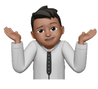
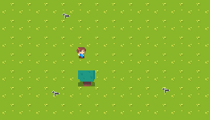
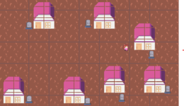
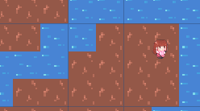
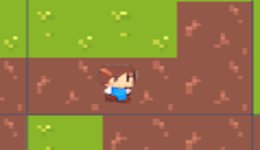
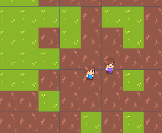

Somos un equipo apasionado por la sostenibilidad y el medio ambiente. GreenTerra es un proyecto que busca crear conciencia ecológica a través de un videojuego donde los jugadores restauran la naturaleza y equilibran el ecosistema.
Nuestra misión con el videojuego es concientizar a las personas sobre el estado actual del planeta, todo mediante hechos científicos y reales que lo respalden.
Maurizio Mongelós - Programación y Manual de Usuario
Rafael Rodas - Diseñador de Página Web
Antonella Rodríguez - Documentación, Diseño Gráfico y Finanzas
Juan Torres - Programación y Finanzas
Liliana Zárate - Storytelling y Documentación
Este videojuego de aventura y acción fue diseñado con el objetivo de incentivar a un público de entre 12 y 19 años a tomar conciencia y fomentar la empatía con respecto al medio ambiente. Es por eso que en el videojuego presentamos una versión del planeta completamente deteriorada y destruida por causas humanas, es decir, un mundo post-apocalíptico. Comienza con la introducción de un personaje que está a cargo de informar al usuario sobre el estado actual del planeta, guiándolo a través de misiones para revertir los daños causados.
El primer personaje llamado Carl es introducido. Este solicita al usuario que lo acompañe a plantar árboles y restaurar la vida silvestre con diferentes tipos de plantas, mientras está plantando se acercan algunas aves con aspecto raro que tratan de atacar al usuario pero una vez que, planta todo, estas desaparecen.
Carl introduce al segundo personaje (Rosa) que le pide al usuario que le siga hasta un barrio pequeño, al llegar le solicita que junte la basura esparcida en la vereda y el pórtico de las casas. Una vez finalizado esto, las casas cambian su tono (antes eran color opaco, lleno de polvo) a uno limpio y normal (a medida que el usuario está trabajando en este nivel se puede ver un personaje nuevo, de aspecto sospechoso pero él desaparece de repente).
Rosa le comenta al usuario como ya no es posible conseguir agua potable y le pide que le acompañe a ver el horrible estado en el que se encuentra el lago que está cerca. Al llegar le pide que limpie sacando la basura, y cuando el usuario trata de sacar la segunda basura salta un signo de emergencia en el juego señalizando que hay algo en el agua y al hacer zoom se ven unos bichos radioactivos que va a tener que eliminar el usuario.
Una vez que el usuario logra pasar el nivel 3, detrás de él, aparece el personaje sospechoso del nivel 2, este personaje usa una máscara y utiliza uniforme de agente, cuando se introduce (James) demuestra que él desea que todo siga como está y le pide al usuario que no mejore el estado del medioambiente, luego el trata de atacar al usuario y se pelean entre ambos. Una vez que el usuario logra ganarle al agente pasa al nivel final (5).
Se introduce un personaje final (Kira), este personaje cuenta toda la historia (usando flashbacks de cómo estaba antes el planeta) y pide al usuario que le acompañe a un pequeño edificio para purificar el aire con una máquina. Al llegar ahí le encuentran al villano final llamado Don (es el dueño de una de las empresas que destruyeron el planeta) y le dice que no le permitirá limpiar el ambiente.Esto desencadena una gran batalla y una vez que el usuario gane, Kira le pedirá al usuario que encienda la máquina y cuando se encienda todo se reestablecerá. Posteriormente, una explicación sobre la importancia de cuidar el medioambiente y las consecuencias de que si esto no se realiza aparecerá en la pantalla del usuario junto con un agradecimiento por haber probado el videojuego.
